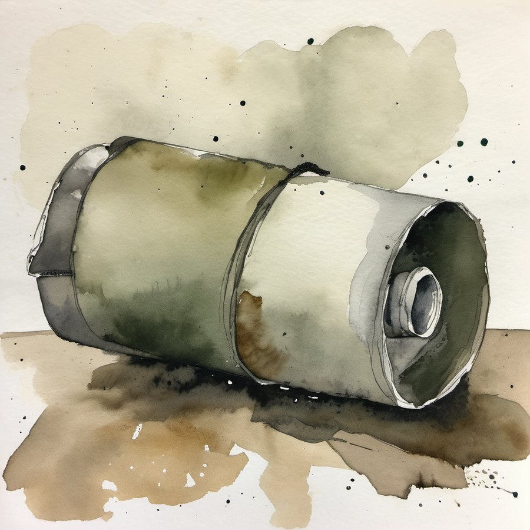
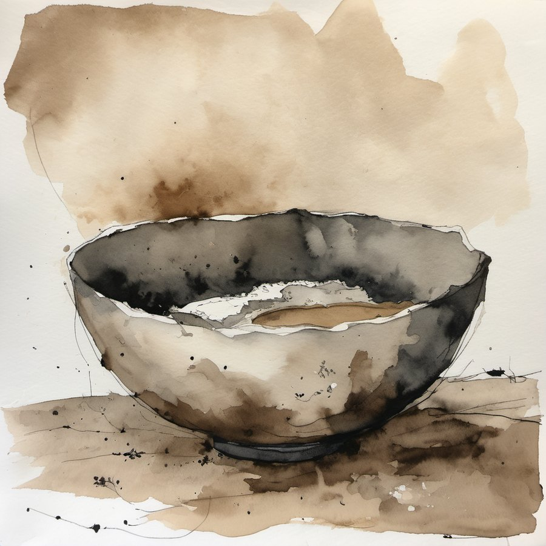
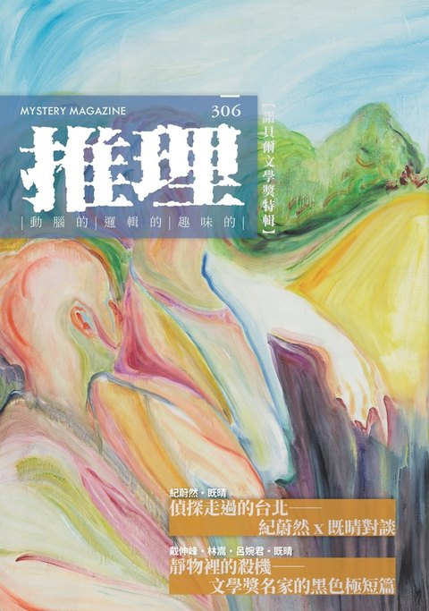
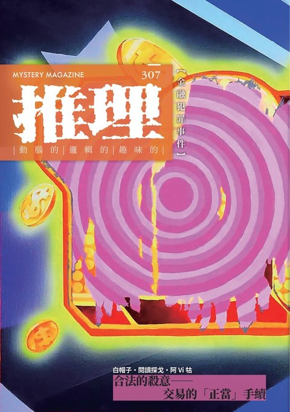
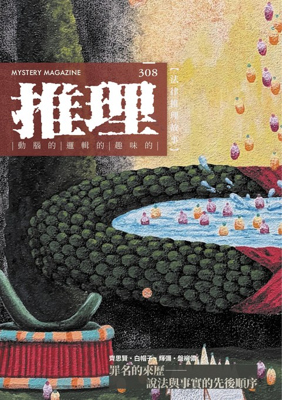

扎滿圖釘的屍體
政論節目名嘴蘇忠奇在南部一座農場錄影，中途說要去上廁所，就沒有再回來。兩天後，農民循著大量聚集的蒼蠅，在路邊水池找到他：露出皮膚的地方全被綠色圖釘扎滿，眼睛、鼻子、嘴巴周圍尤其密集，腹部壓著一小袋生豬肝，旁邊躺著一支還亮著的手電筒。刑警王彥恩想不通這些布置要做什麼——插圖釘要時間，割刀痕要時間，每一項都在拉高被人撞見的風險。而他的隊長只想趕快去吃飯。
第九屆林佛兒獎經初審、複審兩輪不重複的評審審查，選出四篇進入決審階段。其中〈神轎裡的密室〉未能於時限內完成修稿，喪失資格，決審因此在以下三篇之間進行。
這三篇都已通過複審「在地性、推理性」兩項核心指標的門檻，決審階段不再淘汰任何一篇；決審委員要做的，是在三篇各具水準的小說之間形成整體判斷。

政論節目名嘴蘇忠奇在南部一座農場錄影，中途說要去上廁所，就沒有再回來。兩天後，農民循著大量聚集的蒼蠅，在路邊水池找到他：露出皮膚的地方全被綠色圖釘扎滿，眼睛、鼻子、嘴巴周圍尤其密集，腹部壓著一小袋生豬肝，旁邊躺著一支還亮著的手電筒。刑警王彥恩想不通這些布置要做什麼——插圖釘要時間，割刀痕要時間，每一項都在拉高被人撞見的風險。而他的隊長只想趕快去吃飯。

選舉造勢的喇叭聲蓋過整條街。調職到鄉下不久的年輕警察孫迪，休假日正在麵攤吃牛肉麵，鄰居衝進來喊救命。水溝裡趴著一個人，穿著印有標語的黃背心，臉埋在爛泥裡。死者是全社區都知道的釘子戶，一個人擋住整片重劃區的開發。法醫報告寫著酒醉失足、意外落水，長官簽了字，案子結了，孫迪接到的新任務是去隔壁農家找一頭走失的牛。他還是回了現場一趟——那條水溝平常是乾的。

梅雨季的老萬華，一棟屋齡五十年的連棟公寓。四樓的房地產投資客倒在客廳中央，畫後的保險箱被翻開，桌上還擺著兩盒超商涼麵。巷口的監視器拍到一名外送員在案發前一晚進入這棟樓，待了將近半小時，離開時提著沉重的東西；他的戶頭裡剛進帳三十萬。機車與存款一起被查扣以後，來找他的是這棟樓的包租代管房仲——房子成了凶宅，房仲的佣金也一起泡湯。兩個人各懷各的打算，一起走進那條漏水的樓梯間。
※以上為亂數排序，無任何排名或其他意義。
「把在地性元素抽離之後……如果換個地方、換個背景，故事還是成立，在地性我就不會給太高分。」
「真兇通常會有兩個要件，一是要在故事前三分之一登場，二是不能是一個存在感稀薄的人物。」
「作品是想聚焦在哪一段？總之，時空背景不同，狀況差異很大，有必要標定清楚。」
「如果兇手行兇單純出於恨意，對遺體的處理往往就很粗糙，大概只是搬運到第二現場遺棄。」
「可讀性方面，部分段落的說明感太強烈，人物塑造單一，功能性太明顯……缺乏成長跟關鍵的反轉。」
複審從大量來稿中篩選晉級；決審面對的是最終通過門檻的三篇，任務是形成最終判斷，選出足以代表本屆「誕生於台灣土地」精神的一篇。
五項指標與比重歷屆固定，全體委員共用，不得更動。在決審階段，它們是委員形成整體判斷時的共同視角，不是換算名次的公式。
在地性與推理性合佔六成，是本獎的雙核心。
在地性與推理性是本獎的雙核心，也是首獎評選的決定性權重。委員若認為某一篇的雙核心明顯弱於他篇，應在排序與推薦中據實反映，不以其他指標補救。
靈異、科幻、奇幻等類型元素若凌駕於推理主軸之上，也就是抽掉這些元素，謎題便無法成立，推理性一項不予高評，並須於評語中說明。元素僅作氛圍或輔助設定、推理核心仍建立在現實邏輯上時，不觸發此條。
三篇皆已達本獎水準，五項指標在決審只作輔助參照。委員的最終排序與推薦，以對作品的整體判斷為準，包含整體風格與調性的成熟度、敘事完成度與閱讀餘韻、台灣質地的不可替換性，以及任何決定性瑕疵。
每位委員的質性內容各自獨立撰寫，會議前不開啟其他委員已填的評分表；這條紀律也擴及選材層，在三篇中挑哪些點當亮點、哪些當保留，也不得被其他委員的清單影響。三篇皆已通過初選與複審階段的 AI 風險檢核，決審階段不再以 AI 為淘汰條件。
以上三篇將分別收錄《推理》雜誌 306、307、308 期，
並於 2026 年 12 月由幻華創造出版《第九屆林佛兒獎得獎作品集》電子書。



詭祕日現場可購買 306、307 期。
第五至第八屆的作品集，以及第一至第四屆的回顧，可於官網「林佛兒獎」各屆頁面查閱。